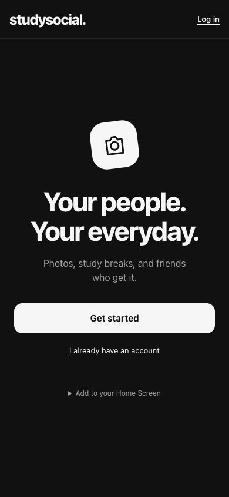
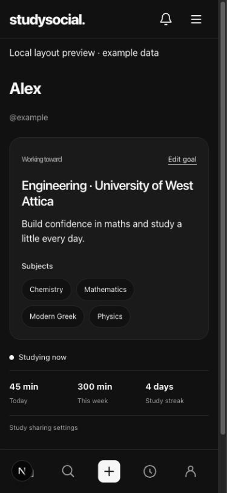
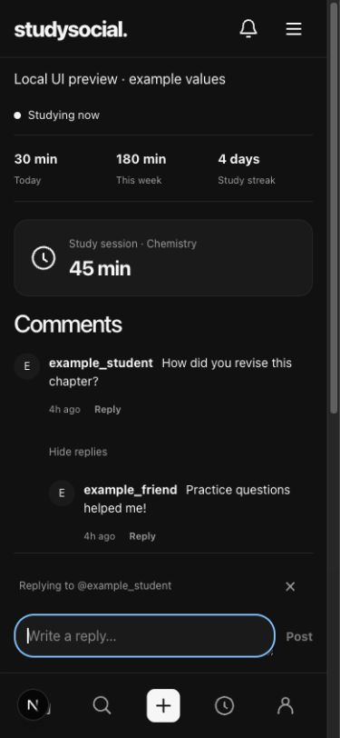
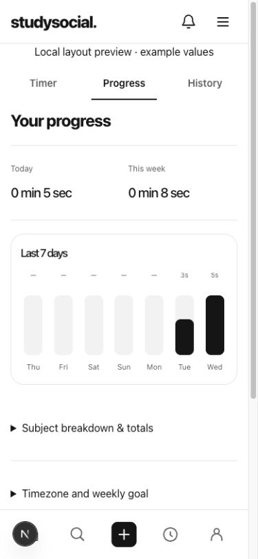
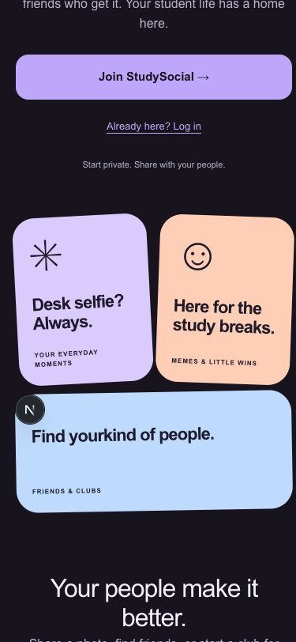

Studying alone is hard to stick with.
Students around me didn't feel motivated to study. In Greece, the last years of high school build up to the Panhellenic exams, which decide which university and degree you get into. That means a lot of hours at a desk, mostly alone.
The idea came from a friend. We thought that if studying was something you did with your friends, where you could see each other putting in the hours and share it, people would enjoy it more and keep at it. So StudySocial is a study timer with a social network built around it.
A study timer with friends around it.
- Study timer. Pick a subject and a method (Pomodoro, 52/17, deep work and others), then start, pause and finish.
- Progress. Today and this week, a 7-day chart, streaks and session history.
- Live status. Friends see when you're studying right now.
- Photo posts. Share your study day, with likes and comments.
- Profiles with a goal. Your target university and degree, and your subjects, come first.
- Board. A ranking of real focused hours among friends.
- Messages and clubs. Direct messages and student groups.
- Safety. Private accounts, blocking, reporting and a review queue, because many users may be under 18.
It's a web app you add to your phone's Home Screen, in Greek and English. It's not in the App Store or Google Play.




Screenshots are design previews from 30 Sep – 1 Oct 2026, filled with example data, not real users. The app changed during the beta.
What happened in the beta.
I shared it with students at my school. The beta ran from 3 to 15 October 2026. All numbers below were counted from the app's database on 11 November 2026 and cover that whole period. They include my own account.
From sign-up to coming back
*Estimate: accounts with any activity 7 or more days after they signed up. A rough measure, not a proper retention cohort.
People active each day
October 2026. Peak: 11 on 9 Oct. 21 different people were active in the week of 5 Oct. The beta ended on 15 Oct.
What users and the data taught me.
-
Signing up isn't the same as studying.
On 6 October I was worried nobody was studying, so I had the database checked. Of the 10 accounts created the day before, 7 had finished their profile and 0 had started a timer. I added a prompt to start a first study session right after setup. Overall, 16 of the 50 accounts ever used the timer.
-
The timer asked too much of people.
On 12 October, from my own use, I wrote down the core problem:
"too much manual work opening the… app, pressing start the timer, remembering to do that every time you study."
So I changed the design: a one-tap start card at the top of the feed that remembers your last subject, plus a way to log a session after you've finished. That shipped on 14 October, the day before the beta stopped, so I don't have data on whether it worked.
-
The social side got used more than the timer.
16 accounts used the timer, but people made 177 follows, 106 likes and 45 posts. People came for their friends more than for the timer. On 12 October I decided the app needed a different way for people to connect while they study, not just a timer on its own screen.
-
Sign-up has to work on the phone people actually use.
On 5 October I switched email confirmation from a link to a code you type into the app. When I tested it on my phone, the installed app had nowhere to enter the code, and friends told me they couldn't sign up. We fixed it the same day. Still, 10 of the 50 accounts never confirmed their email.
-
Small background habits add up on a server.
While the app was open, it kept asking the server for new messages and notifications, as often as every 3 seconds in a chat. Every check uses server time, and on a free hosting plan that time is limited. On 11 October I cut how often it checks.
-
Taste is a decision, not a default.
The first version, on 30 September, was colourful and looked like a website. I rejected it and asked for something simpler that felt like a phone app. Left: before. Right: after.

Before30 Sep, morning After30 Sep, afternoon
Idea to beta in under a week.
- First commit.
- First working version connected to a real database.
- First version online. I rejected the colourful design the same day and switched to a simpler one.
- Bought studysocial.gr. First account and first study session, just after midnight.
- 47 of the 50 sign-ups, from students at my school, where I asked people to join.
- Switched sign-up to an in-app code, and fixed it after it broke on installed phones.
- Found that new users weren't starting the timer. Added a first-session prompt.
- Added a "Mixed" subject option for sessions covering more than one subject.
- Busiest day: 11 people active.
- Cut how often the app checks the server, to reduce hosting load.
- Decided manual timing was the main problem.
- Shipped the one-tap start card and logging after the fact. Last new sign-up.
- End of the beta. Last activity.
- studysocial.gr back online.
What I did, and what others did.
The idea came from a friend, who helped brainstorm it early on. A friend also helped as a coordinator during the beta. Everything else was my job. I didn't write most of the code by hand: AI coding agents did. My work was deciding what to build, checking the results on my phone and approving what shipped.
Me
- Made the timer the centre of the app, with friends able to see each other's study effort.
- Set the design direction: rejected the first version, chose the order of profiles and how live status looks.
- Made the privacy rules: private accounts share study activity only with accepted followers.
- Chose an in-app code over email links after testing sign-up on my iPhone.
- Recruited the 50 beta users at my school.
- Tested releases on my iPhone and reported bugs with screenshots.
- Spotted that users weren't studying, and later named manual logging as the core problem.
- Reviewed and approved changes before they shipped, bought the domain and ran the accounts.
Others
- A friend: the original idea and early brainstorming.
- A friend: coordinator during the beta.
- AI coding agents wrote most of the code under my direction: Claude Code, Grok, Instinct, a Cursor agent and T3 Code.
- Beta users at my school found sign-up problems and showed me how the app was really used.
- Tools: Next.js, Supabase and Vercel.